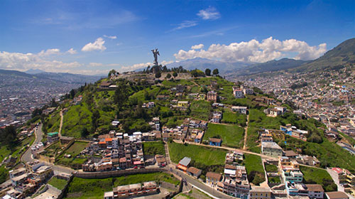
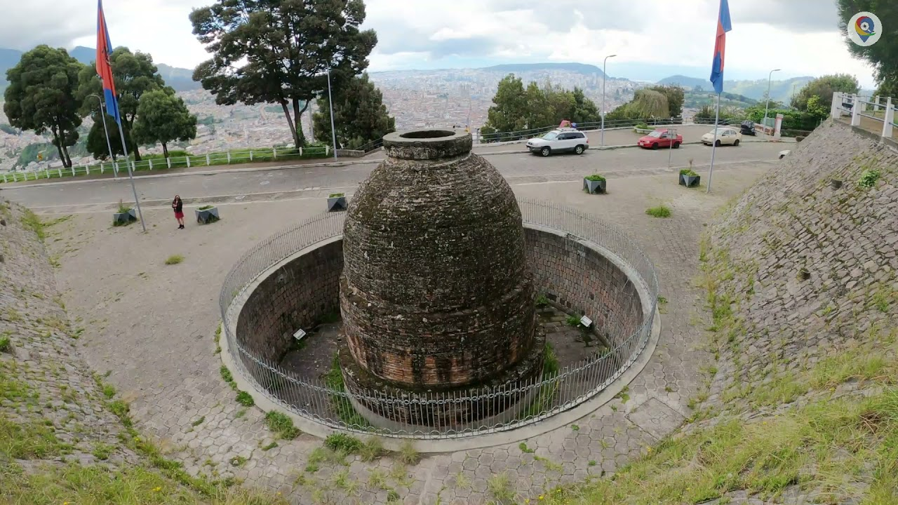
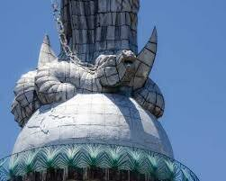
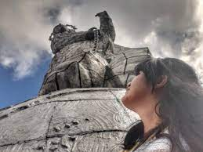
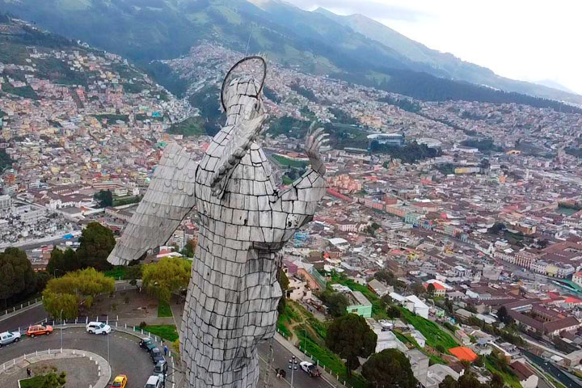
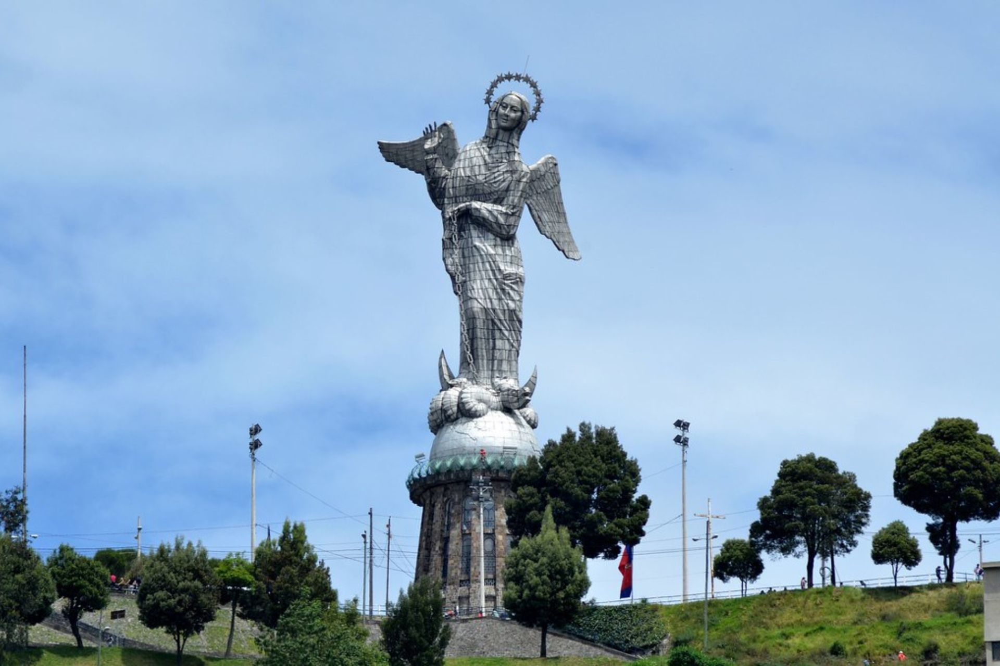
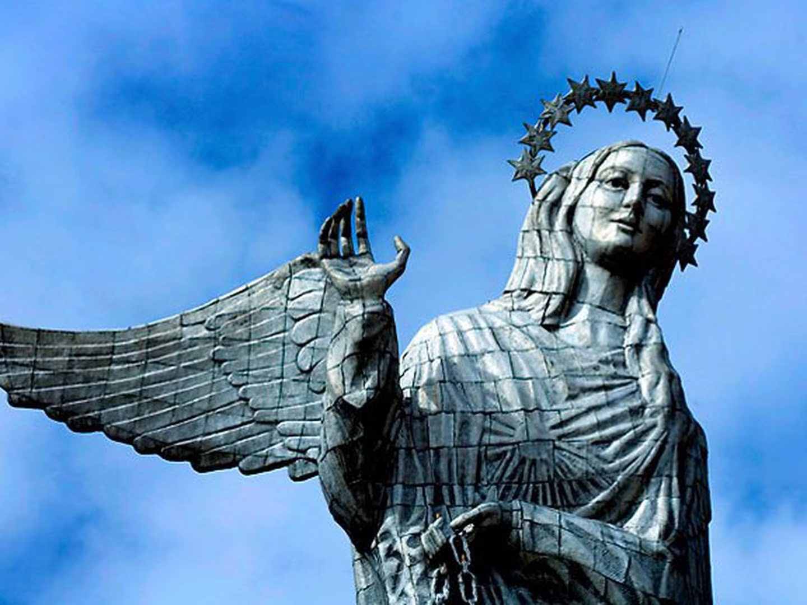
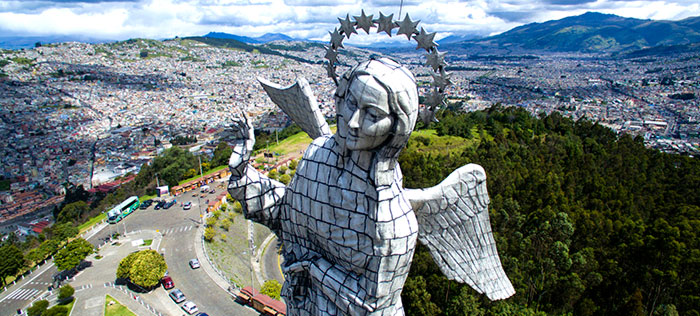
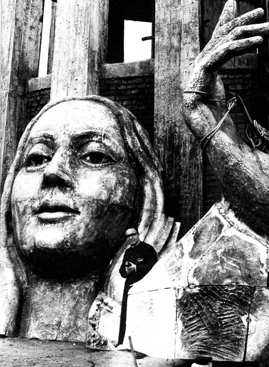
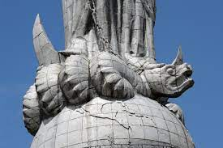

El Panecillo es una elevación natural de 3.000 metros sobre el nivel del mar, fue bautizada con este nombre por su parecido con un pequeño pan; está enclavada en el corazón mismo de la ciudad de Quito. Es uno de los sitios más visitados de la ciudad. Por su ubicación se ha convertido en el más importante mirador natural de la ciudad, desde el que se puede apreciar la disposición urbana de la capital, desde su centro histórico y hacia los extremos norte y sur.
El lugar recibió su nombre de los conquistadores españoles, pues antes era llamado por los aborígenes como “Shungoloma” que en quichua significa “loma del corazón”. En la época pre incaica, en este sitio existió un templo de adoración al sol, llamado “Yavirac”, el cual fue destruido por Rumiñahui mientras resistía con sus tropas al avance español.


Como vestigio de la época incaica en este sector encontramos “la Olla del Panecillo”, que es una especie de cisterna circular de ocho metros de profundidad que se llenaba de agua lluvia que era utilizada para el riego de los sembríos del lugar. En tiempos de la colonia el agua que aquí se recolectaba servía para el riego de los jardines de la mansión de Bellavista y luego fue utilizado como sitio de defensa de las tropas coloniales durante la batalla libertaria del Pichincha, el 24 de Mayo de 1822.
Durante toda la época colonial el Panecillo marcó el fin de la ciudad por el extremo sur, y por ello los viajeros que llegaban desde ciudades como Ambato, Guayaquil, Latacunga, Lima o Cuenca sabían, al divisarlo, que su llegada a Quito era cuestión de un par de horas nada más. El cerro tenía una parte boscosa, en especial en el costado sur.

El globo terráqueo representa al mundo y sobre éste se encuentra la serpiente, que representa el pecado que Eva cometió

La base de el monumento mide once metros y treinta metros la imagen de la Virgen Santísima

Al ingresar al monumento los visitantes se encuentran a 3016 m.s.n.m. y al llegar al mirador a 3027 m.s.n.m.

El peso de la estatua es de 124.000 kilogramos

El ala abierta de la Virgen mide 90 metros cuadrados. Estas piezas fueron armadas en tierra y luego ensambladas al cuerpo

La corona de la Virgen está compuesta de 12 estrellas que representan a los 12 apóstoles o las 12 tribus de Israel

El rostro de la Virgen María, al igual que el resto de partes, fueron traídas desde España en barco, hasta el Ecuador en 1974

La cabeza del dragón representa al demonio